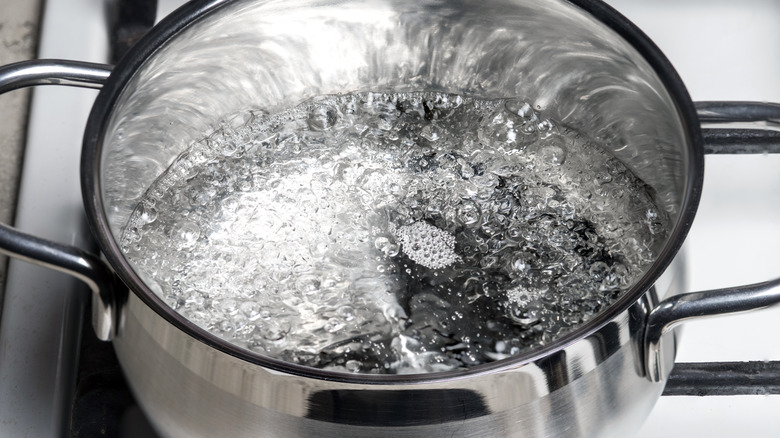

Hot Water Recipe

This is for all you folks who never learned how to cook and say
you wouldn't know how to boil water.
This can also come on handy if you're in a 1940's film and your
wife is having a baby. Boiling water was critically important
during that era. You're welcome.
Stuff You're Gonna Need (Ingredients)
Steps
- Fill the pan with water. Make sure the water is an inch or more from
the top of the pan or you're going to have a bad time.
- Put the pan on the stove and turn the burner to High.
- Watch the pan. The old saying isn't true. It just seems to take forever. Take a picture for social media.
- When the water is at a rolling boil, you're done. Turn off the stove.
- Congratulate yourself on a job well done.